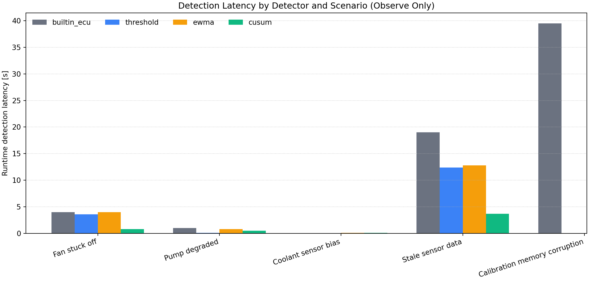
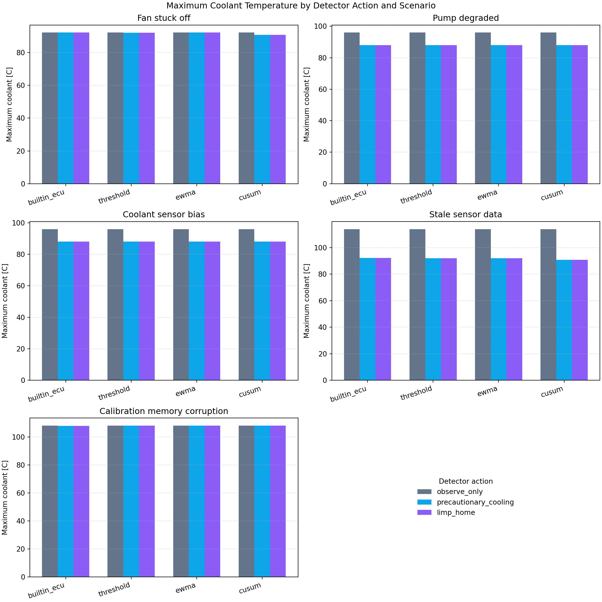
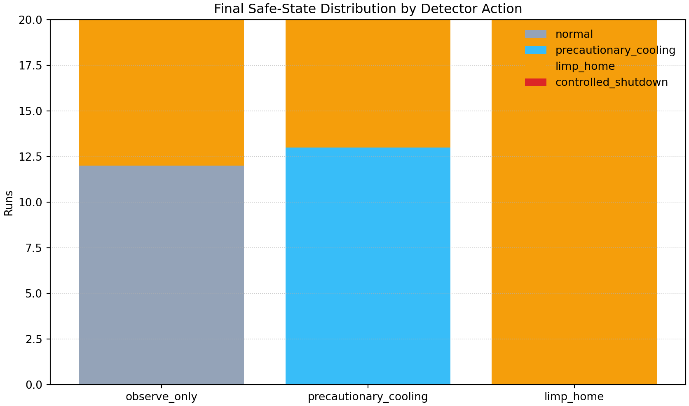
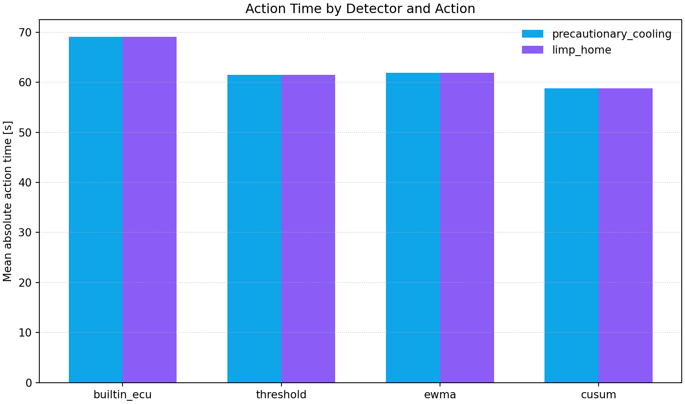
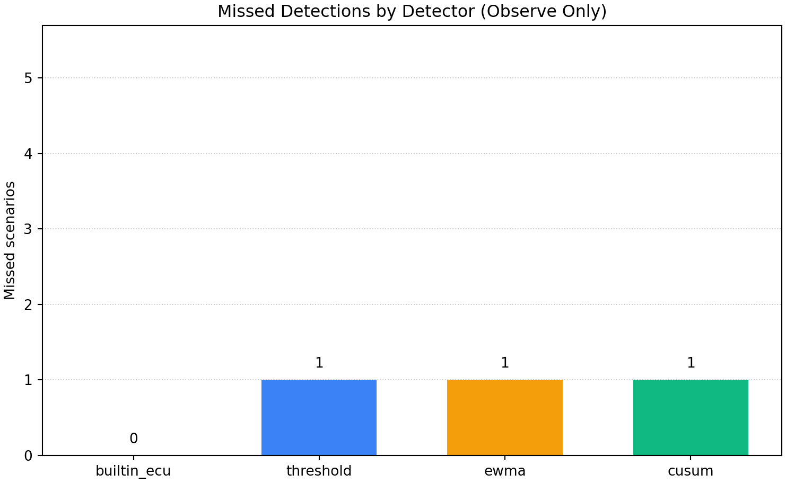

Runtime Detector Intervention Study v1
This reproducible study uses a virtual ECU research simulator to examine
whether earlier runtime detection and optional detector-driven safety
requests change simulated safety and thermal outcomes. Runtime detectors
execute inside the C simulation loop. Detector actions are optional research interventions;
observe_only preserves baseline built-in ECU behavior.
Study Design
Five custom single-fault scenarios are crossed with four runtime detectors and three action modes, producing 60 deterministic simulator runs. A detector identifies an anomaly; an action optionally requests precautionary cooling or limp-home through the existing maximum-severity safety arbitration.
Key Findings
- cusum had the lowest mean runtime detection latency among detected observe-only scenarios (1275.0 ms; 4/5 scenarios detected).
- precautionary_cooling and limp_home produced the lowest descriptive mean maximum coolant temperature (93.54 C), a -7.74 C difference from observe_only.
- Missed detections across the five observe-only scenario traces were builtin_ecu: 0, threshold: 1, ewma: 1, cusum: 1.
- Controlled shutdown was requested in 0 of 60 runs.
- Observe-only runs retain the simulator's built-in diagnostic and safe-state behavior; intervention comparisons add only the selected detector request.
Figures





Main Comparison Table
| Scenario | Detector | Action | Detected | Runtime latency [ms] | Action request | Action time [ms] | First ECU DTC | ECU latency [ms] | Final state | Max coolant [C] | Shutdown |
|---|---|---|---|---|---|---|---|---|---|---|---|
| Fan stuck off | builtin_ecu | observe_only | 1 | 4000 | none | n/a | fan_tracking_fault | 4000 | limp_home | 92.25 | 0 |
| Fan stuck off | builtin_ecu | precautionary_cooling | 1 | 4000 | precautionary_cooling | 79000 | fan_tracking_fault | 4000 | limp_home | 92.25 | 0 |
| Fan stuck off | builtin_ecu | limp_home | 1 | 4000 | limp_home | 79000 | fan_tracking_fault | 4000 | limp_home | 92.25 | 0 |
| Fan stuck off | threshold | observe_only | 1 | 3600 | none | n/a | fan_tracking_fault | 4000 | limp_home | 92.25 | 0 |
| Fan stuck off | threshold | precautionary_cooling | 1 | 3600 | precautionary_cooling | 78600 | fan_tracking_fault | 4000 | limp_home | 92.13 | 0 |
| Fan stuck off | threshold | limp_home | 1 | 3600 | limp_home | 78600 | fan_tracking_fault | 4000 | limp_home | 92.13 | 0 |
| Fan stuck off | ewma | observe_only | 1 | 4000 | none | n/a | fan_tracking_fault | 4000 | limp_home | 92.25 | 0 |
| Fan stuck off | ewma | precautionary_cooling | 1 | 4000 | precautionary_cooling | 79000 | fan_tracking_fault | 4000 | limp_home | 92.25 | 0 |
| Fan stuck off | ewma | limp_home | 1 | 4000 | limp_home | 79000 | fan_tracking_fault | 4000 | limp_home | 92.25 | 0 |
| Fan stuck off | cusum | observe_only | 1 | 800 | none | n/a | fan_tracking_fault | 4000 | limp_home | 92.25 | 0 |
| Fan stuck off | cusum | precautionary_cooling | 1 | 800 | precautionary_cooling | 75800 | fan_tracking_fault | 1000 | limp_home | 90.87 | 0 |
| Fan stuck off | cusum | limp_home | 1 | 800 | limp_home | 75800 | fan_tracking_fault | 1000 | limp_home | 90.87 | 0 |
| Pump degraded | builtin_ecu | observe_only | 1 | 1000 | none | n/a | pump_tracking_fault | 1000 | normal | 96.00 | 0 |
| Pump degraded | builtin_ecu | precautionary_cooling | 1 | 1000 | precautionary_cooling | 61000 | pump_tracking_fault | 1000 | precautionary_cooling | 88.00 | 0 |
| Pump degraded | builtin_ecu | limp_home | 1 | 1000 | limp_home | 61000 | pump_tracking_fault | 1000 | limp_home | 88.00 | 0 |
| Pump degraded | threshold | observe_only | 1 | 100 | none | n/a | pump_tracking_fault | 1000 | normal | 96.00 | 0 |
| Pump degraded | threshold | precautionary_cooling | 1 | 100 | precautionary_cooling | 60100 | pump_tracking_fault | 500 | precautionary_cooling | 88.00 | 0 |
| Pump degraded | threshold | limp_home | 1 | 100 | limp_home | 60100 | pump_tracking_fault | 500 | limp_home | 88.00 | 0 |
| Pump degraded | ewma | observe_only | 1 | 800 | none | n/a | pump_tracking_fault | 1000 | normal | 96.00 | 0 |
| Pump degraded | ewma | precautionary_cooling | 1 | 800 | precautionary_cooling | 60800 | pump_tracking_fault | 1000 | precautionary_cooling | 88.00 | 0 |
| Pump degraded | ewma | limp_home | 1 | 800 | limp_home | 60800 | pump_tracking_fault | 1000 | limp_home | 88.00 | 0 |
| Pump degraded | cusum | observe_only | 1 | 500 | none | n/a | pump_tracking_fault | 1000 | normal | 96.00 | 0 |
| Pump degraded | cusum | precautionary_cooling | 1 | 500 | precautionary_cooling | 60500 | pump_tracking_fault | 500 | precautionary_cooling | 88.00 | 0 |
| Pump degraded | cusum | limp_home | 1 | 500 | limp_home | 60500 | pump_tracking_fault | 500 | limp_home | 88.00 | 0 |
| Coolant sensor bias | builtin_ecu | observe_only | 1 | 0 | none | n/a | coolant_sensor_rationality | 0 | normal | 96.00 | 0 |
| Coolant sensor bias | builtin_ecu | precautionary_cooling | 1 | 0 | precautionary_cooling | 30000 | coolant_sensor_rationality | 0 | precautionary_cooling | 88.00 | 0 |
| Coolant sensor bias | builtin_ecu | limp_home | 1 | 0 | limp_home | 30000 | coolant_sensor_rationality | 0 | limp_home | 88.00 | 0 |
| Coolant sensor bias | threshold | observe_only | 1 | 0 | none | n/a | coolant_sensor_rationality | 0 | normal | 96.00 | 0 |
| Coolant sensor bias | threshold | precautionary_cooling | 1 | 0 | precautionary_cooling | 30000 | coolant_sensor_rationality | 0 | precautionary_cooling | 88.00 | 0 |
| Coolant sensor bias | threshold | limp_home | 1 | 0 | limp_home | 30000 | coolant_sensor_rationality | 0 | limp_home | 88.00 | 0 |
| Coolant sensor bias | ewma | observe_only | 1 | 100 | none | n/a | coolant_sensor_rationality | 0 | normal | 96.00 | 0 |
| Coolant sensor bias | ewma | precautionary_cooling | 1 | 100 | precautionary_cooling | 30100 | coolant_sensor_rationality | 0 | precautionary_cooling | 88.00 | 0 |
| Coolant sensor bias | ewma | limp_home | 1 | 100 | limp_home | 30100 | coolant_sensor_rationality | 0 | limp_home | 88.00 | 0 |
| Coolant sensor bias | cusum | observe_only | 1 | 100 | none | n/a | coolant_sensor_rationality | 0 | normal | 96.00 | 0 |
| Coolant sensor bias | cusum | precautionary_cooling | 1 | 100 | precautionary_cooling | 30100 | coolant_sensor_rationality | 0 | precautionary_cooling | 88.00 | 0 |
| Coolant sensor bias | cusum | limp_home | 1 | 100 | limp_home | 30100 | coolant_sensor_rationality | 0 | limp_home | 88.00 | 0 |
| Stale sensor data | builtin_ecu | observe_only | 1 | 19000 | none | n/a | coolant_sensor_rationality | 19000 | normal | 113.99 | 0 |
| Stale sensor data | builtin_ecu | precautionary_cooling | 1 | 19000 | precautionary_cooling | 84000 | coolant_sensor_rationality | 19000 | precautionary_cooling | 92.14 | 0 |
| Stale sensor data | builtin_ecu | limp_home | 1 | 19000 | limp_home | 84000 | coolant_sensor_rationality | 19000 | limp_home | 92.14 | 0 |
| Stale sensor data | threshold | observe_only | 1 | 12400 | none | n/a | coolant_sensor_rationality | 19000 | normal | 113.99 | 0 |
| Stale sensor data | threshold | precautionary_cooling | 1 | 12400 | precautionary_cooling | 77400 | coolant_sensor_rationality | 13500 | precautionary_cooling | 91.91 | 0 |
| Stale sensor data | threshold | limp_home | 1 | 12400 | limp_home | 77400 | coolant_sensor_rationality | 13000 | limp_home | 91.91 | 0 |
| Stale sensor data | ewma | observe_only | 1 | 12800 | none | n/a | coolant_sensor_rationality | 19000 | normal | 113.99 | 0 |
| Stale sensor data | ewma | precautionary_cooling | 1 | 12800 | precautionary_cooling | 77800 | coolant_sensor_rationality | 14000 | precautionary_cooling | 91.95 | 0 |
| Stale sensor data | ewma | limp_home | 1 | 12800 | limp_home | 77800 | coolant_sensor_rationality | 13500 | limp_home | 91.95 | 0 |
| Stale sensor data | cusum | observe_only | 1 | 3700 | none | n/a | coolant_sensor_rationality | 19000 | normal | 113.99 | 0 |
| Stale sensor data | cusum | precautionary_cooling | 1 | 3700 | precautionary_cooling | 68700 | coolant_sensor_rationality | 4500 | precautionary_cooling | 90.72 | 0 |
| Stale sensor data | cusum | limp_home | 1 | 3700 | limp_home | 68700 | coolant_sensor_rationality | 4500 | limp_home | 90.72 | 0 |
| Calibration memory corruption | builtin_ecu | observe_only | 1 | 39500 | none | n/a | cooling_performance_low | 39500 | limp_home | 108.17 | 0 |
| Calibration memory corruption | builtin_ecu | precautionary_cooling | 1 | 39500 | precautionary_cooling | 91500 | cooling_performance_low | 39500 | precautionary_cooling | 108.01 | 0 |
| Calibration memory corruption | builtin_ecu | limp_home | 1 | 39500 | limp_home | 91500 | cooling_performance_low | 39500 | limp_home | 108.01 | 0 |
| Calibration memory corruption | threshold | observe_only | 0 | n/a | none | n/a | cooling_performance_low | 39500 | limp_home | 108.17 | 0 |
| Calibration memory corruption | threshold | precautionary_cooling | 0 | n/a | none | n/a | cooling_performance_low | 39500 | limp_home | 108.17 | 0 |
| Calibration memory corruption | threshold | limp_home | 0 | n/a | none | n/a | cooling_performance_low | 39500 | limp_home | 108.17 | 0 |
| Calibration memory corruption | ewma | observe_only | 0 | n/a | none | n/a | cooling_performance_low | 39500 | limp_home | 108.17 | 0 |
| Calibration memory corruption | ewma | precautionary_cooling | 0 | n/a | none | n/a | cooling_performance_low | 39500 | limp_home | 108.17 | 0 |
| Calibration memory corruption | ewma | limp_home | 0 | n/a | none | n/a | cooling_performance_low | 39500 | limp_home | 108.17 | 0 |
| Calibration memory corruption | cusum | observe_only | 0 | n/a | none | n/a | cooling_performance_low | 39500 | limp_home | 108.17 | 0 |
| Calibration memory corruption | cusum | precautionary_cooling | 0 | n/a | none | n/a | cooling_performance_low | 39500 | limp_home | 108.17 | 0 |
| Calibration memory corruption | cusum | limp_home | 0 | n/a | none | n/a | cooling_performance_low | 39500 | limp_home | 108.17 | 0 |
Limitations
Reproduction
From the repository root:
make
python3 scripts/run_runtime_intervention_study.py